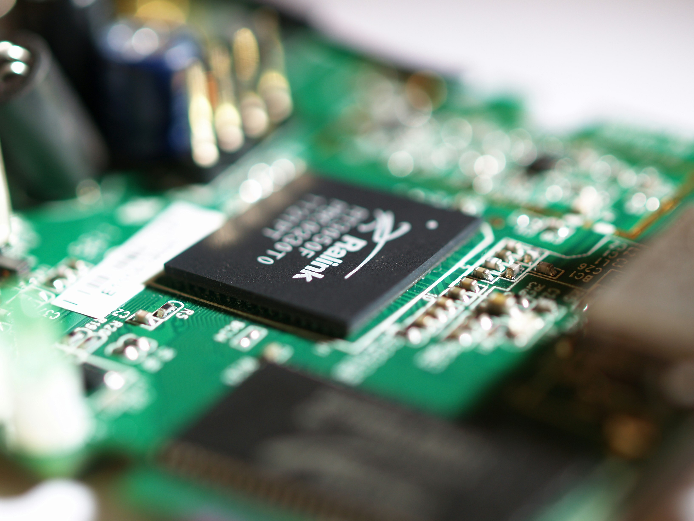
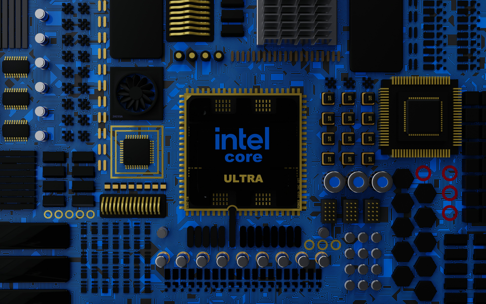
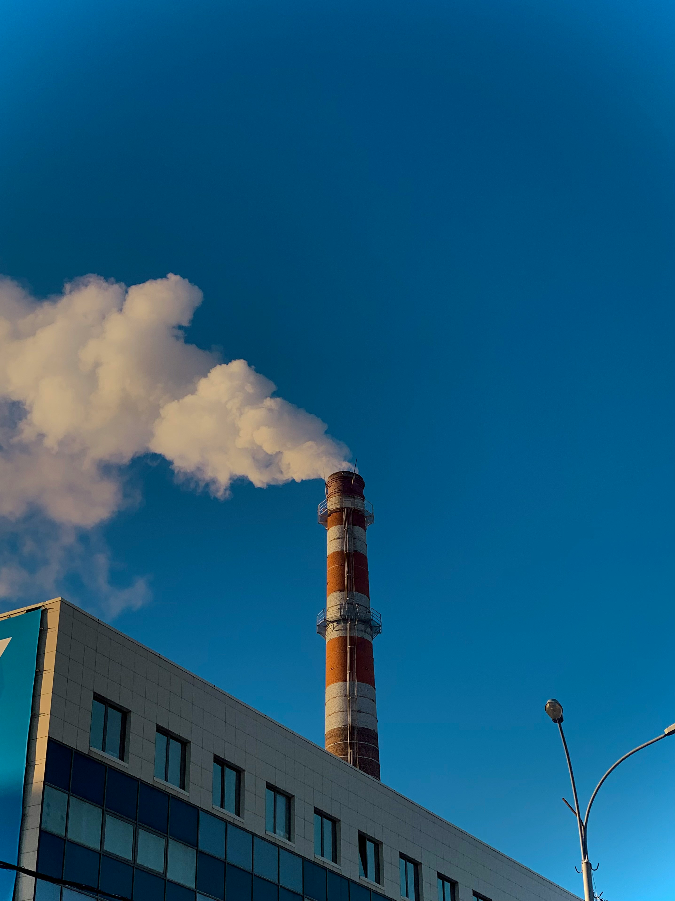
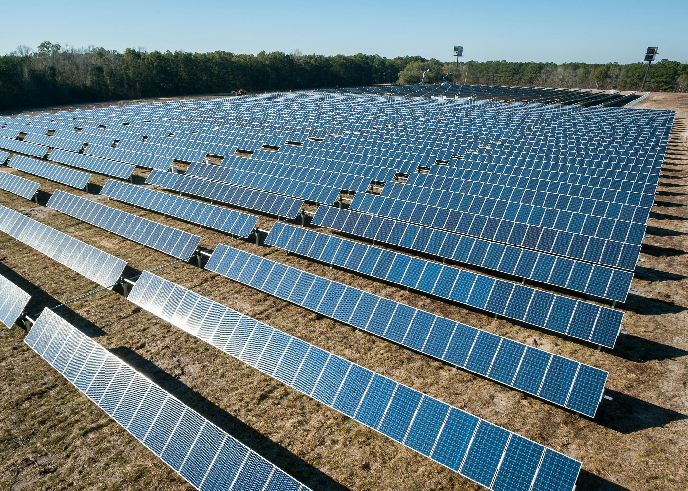

1968
Intel Founded
1971
First Microprocessor

1978
8086 Processor
1985
386 Processor
2006
Peak GHG Emissions
2020
RISE Strategy
2022
Net-Zero By 2040
2023
Renewable Electricity
2024
Sustainability Summit
Scroll to view timeline | Hover over cards to learn more!
RISE Strategy
As part of Intel’s RISE strategy (Responsible, Inclusive, Sustainable, and Enabling), the company has set ambitious goals for 2030. This includes raising industry standards in health, safety, and well-being, while driving progress in environmental sustainability and ethical governance.
Learn moreCommitment
In 2022, Intel pledged to achieve net positive water usage, zero total waste to landfills, and 100% renewable electricity use across global operations by 2040. This is part of its wider responsibility to address climate change and promote sustainability.
Learn moreWater and Waste
Intel is committed to achieving net positive water usage and zero total waste to landfills by 2040. This commitment is part of the company's broader sustainability goals and its responsibility to the environment.
Learn more